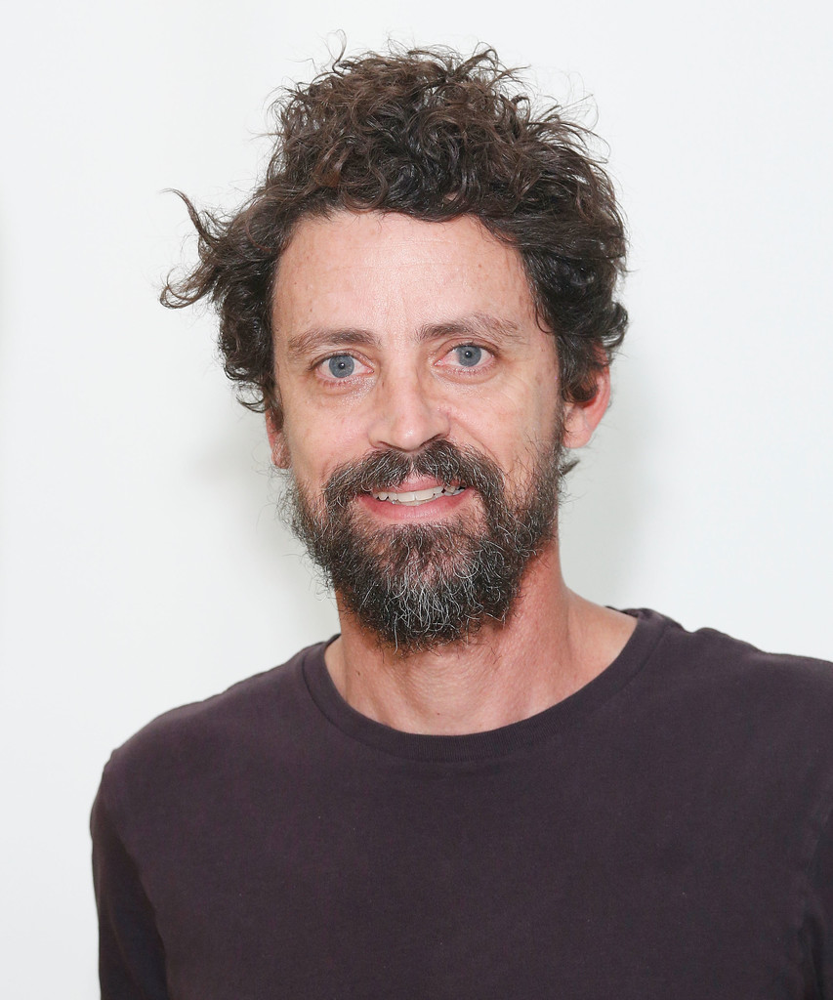
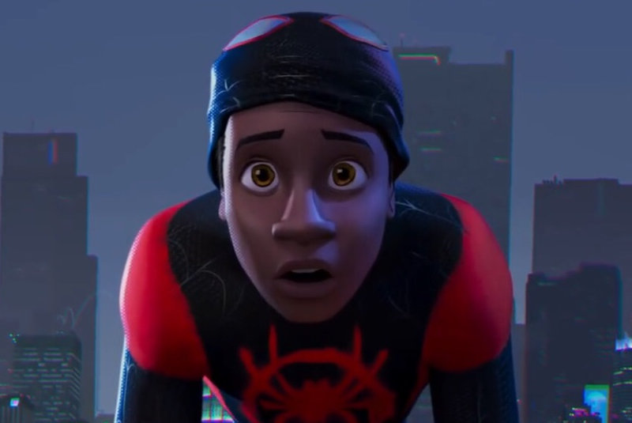
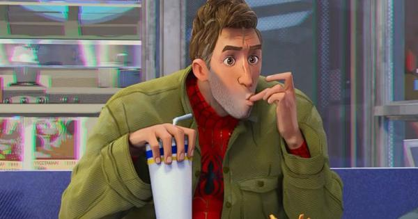
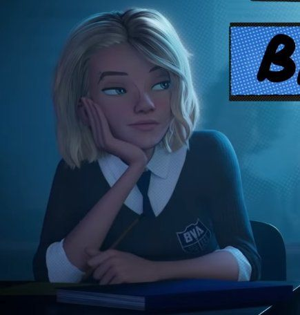
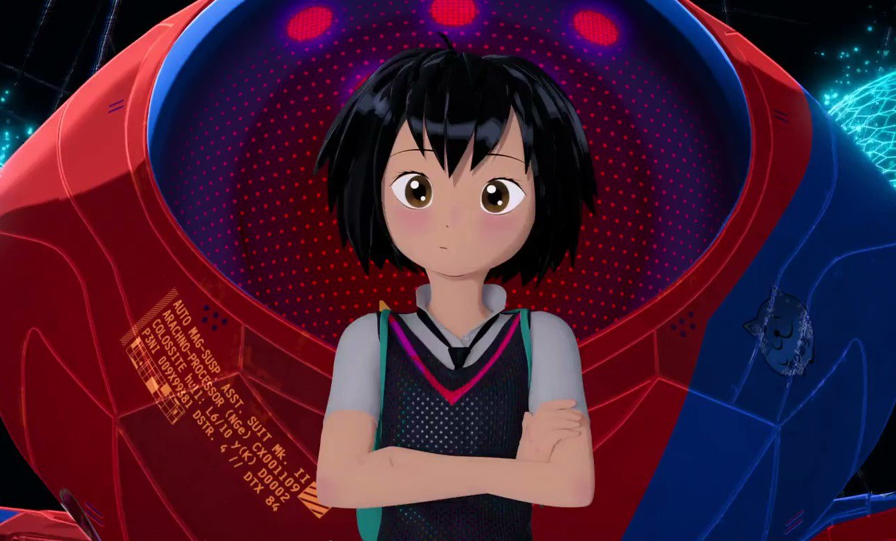
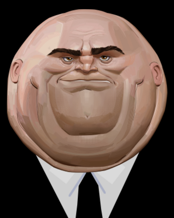

Spider-Man:Into the spider-verse

Info
Titol original: Spider-Man: Into the Spider-Verse
Any:2018
Duració: 117min.
Sinopsis: En un univers paral·lel on Peter Parker ha mort, un jove de secundària anomenat Miles Morales és el nou Spider-Man. Tot i això, quan el líder mafiós Wilson Fisk (a.k.a Kingpin) construeix el "Super Col·lisionador" porta a una versió alternativa de Peter Parker que tractarà d'ensenyar-li a Milers com ser un millor Spider-Man. Però no serà l'únic Spider Man en entrar a aquest univers, 4 versions alternes de Spidey apareixeran i buscaran tornar al seu univers abans que tota la realitat col·lapsi.
Directors
Peter A. Ramsey (nascut el 1962 o el 1963) és un il·lustrador, artista de storyboards, artista de contes, director de cinema i productor de cinema nord-americà. És més conegut per dirigir Rise of the Guardians (2012) de DreamWorks Animation i codirigir Spider-Man: Into the Spider-Verse (2018) de Sony Pictures Animation. Per a Spider-Man: Into the Spider-Verse, es va convertir en el primer afroamericà a ser nominat i a guanyar un Oscar a la millor pel·lícula d'animació.
 Rodney Rothman és un escriptor, productor i director de cinema nord-americà. Ha estat nominat a cinc premis Primetime Emmy
a la millor escriptura per a una sèrie de varietats, i també va escriure els guions de Grudge Match, 22 Jump Street i
Spider-Man: Into the Spider-Verse, que va ser el seu debut com a director. El seu treball a la pel·lícula li va valer el
premi de l'Acadèmia a la millor pel·lícula d'animació, el premi Globus d'Or a la millor pel·lícula d'animació i els premis
Annie per la direcció i l'escriptura en una producció de llargmetratge.
Rodney Rothman és un escriptor, productor i director de cinema nord-americà. Ha estat nominat a cinc premis Primetime Emmy
a la millor escriptura per a una sèrie de varietats, i també va escriure els guions de Grudge Match, 22 Jump Street i
Spider-Man: Into the Spider-Verse, que va ser el seu debut com a director. El seu treball a la pel·lícula li va valer el
premi de l'Acadèmia a la millor pel·lícula d'animació, el premi Globus d'Or a la millor pel·lícula d'animació i els premis
Annie per la direcció i l'escriptura en una producció de llargmetratge.
 Robert Persichetti Jr. és un animador, artista d'històries, guionista i director de cinema nord-americà. És més conegut per codirigir la pel·lícula Spider-Man: Into the Spider-Verse.
Personatges
 Miles Morales és un personatge fictici que apareix a les històries publicades per Marvel Comics, com un dels personatges coneguts com a Spider-Man. Va ser creat per l'escriptor Brian Michael Bendis i l'artista Sara Pichelli, encara que també els editors de Ultimate Marvel i el redactor jefe Axel Alonso van ser inspirats per una sèrie d'idees, contes com a elecció del president d'EE.UU. Barack Obama i l'aparició de l'actor afroamericà Donald Glover vestit amb un vestit de Spider-Man, a més de l'estrena d'una nova sèrie de trucades Community. Miles Morales va aparèixer per primera vegada al quart número d'Ultimate Fallout, a l'agost de 2011, a l'origen de la mort de Peter Parker. Un adolescent de pare afroamericano i mare puertorriqueña, el segon Spider-Man en Ultimate Marvel. La reacció del públic és variada. Alguns opinen que és un truc publicitari motivat per la correcció política, una acusació negativa per Alonso. Alexandra Petri de The Washington Post va pensar que el personatge fora jutjat per la seva qualitat d'histories, i les crítiques positives que han recollit. El personatge posee poders semblants als de l'original Spider-Man, que obtuvo a partir de la picadura d'una aranya genèticament alterada.
 Peter B. Parker és un home que durant la seva adolescència ha estat mordit per una aranya radiactiva que li otorgó habilitats semblants a la d'una aranya. Després de perdre al seu tío Benjamin Parker, Parker va entendre que «Un gran poder conllevava una gran responsabilitat», convertint-se en el superheroi conegut com a Spider-Man.
 Una versió de l'univers alternatiu de Gwen Stacy. Ella reside en la "tierra-65", donde, en el lloc de Peter Parker, Gwen Stacy va ser mordida per l'aranya radiactiva, conduint-la en una carrera com la Spider-Woman del seu món. El personatge també té que lidiar amb diversos enemics, incloses les versions Tierra-65 de Matt Murdock i Frank Castle. És representada per albergar gran part de la personalitat i els conflictes de Peter, a més de compartir els seus poders i habilitats.
 En un moment donat, la Peni va ser mossegada per una aranya amb la qual va formar un vincle psíquic. L'aranya estava allotjada dins del robot del seu pare i, junts, es van convertir en la unitat de lluita contra el crim coneguda com a SP//dr.
 Wilson Fisk va ser un criminal que finalment va assolir el poder a l'inframón criminal de la ciutat de Nova York, i finalment va prendre el relleu com a principal senyor del crim, passant sota el sobrenom de Kingpin of Crime. La seva gran fortuna i influència van causar un sever caos a través de l'activitat criminal que va dirigir. Tanmateix, Wilson va trobar valor a la família, es va casar amb Vanessa Fisk i va tenir un fill amb ella, anomenat Richard. Malgrat el seu immens amor per la seva nova família, això no va dissuadir la seva despietada carrera com a senyor del crim. No obstant això, els seus esquemes finalment serien combatuts pel superheroi campió de Nova York, Spider-Man. L'home aranya es va fer un objectiu per enderrocar les operacions de Kingpin, i ho va fer tan sovint que Fisk va arribar a menysprear-lo completament. Una nit en particular, en Spidey i el Kingpin estaven lluitant a la seva oficina, i mentre Fisk s'apoderava de l'heroi i intentava matar-lo, la Vanessa i en Richard es van ensopegar amb la lluita. Completament horroritzada per la veritable naturalesa de Wilson, Vanessa va fugir de l'escena amb Richard, però mentre conduïa, va morir tràgicament en un accident de cotxe. Devastat per perdre les úniques persones que estimava, Fisk va contractar diversos supervillans, és a dir, el Green Goblin, Tombstone, Scorpion i Doctor Octopus perquè actuessin com els seus executors. Doc Ock, realment la científica cap d'Alchemax, Olivia Octavius, era un expert en física multiversal i va finançar el Col·lisionador per viatjar a altres mons. Amb això, espera trobar un univers on la seva família encara estigués viva.
On Veure-la
| Plataforma | Valoracio | Preu |
|---|---|---|
| Amazon video | 8,4/10 | 2,99€ |
| Rakuten TV | 3,99€ | |
| Google Play | 4/5 | 2,99€ |
| Totes aquestes opcions son en qualitat HD | ||